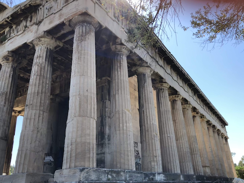
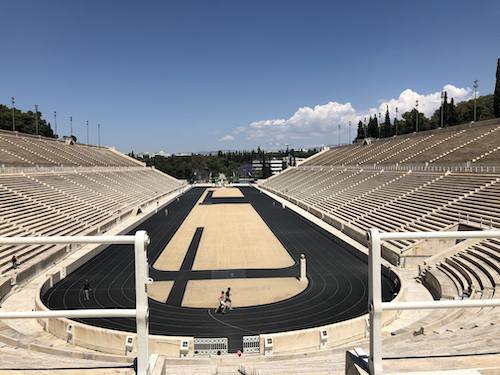
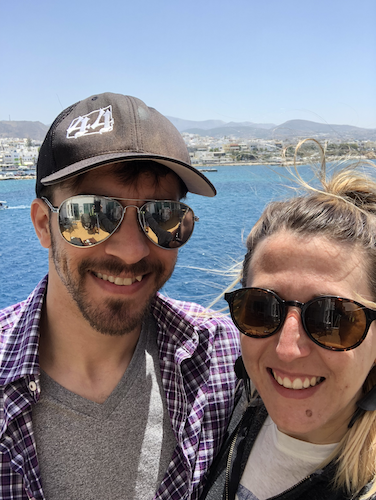
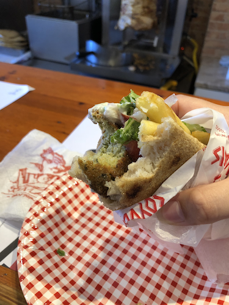
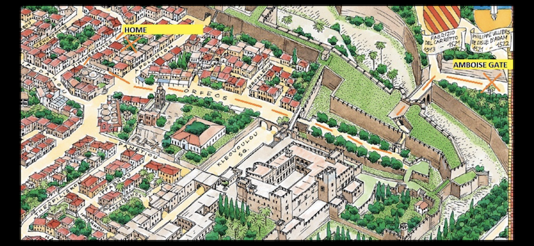

Acropolis

For the first stop on our journey around Greece, we stayed in Athens for 2 nights and 3 days. Our focus was to see as many historical sites as possible. We started with a guided tour to Acropolis. We had an amazing tour guide who lead us on our journey to Acropolis through the city and all around. On the way, we found 100 euros on the ground and couldn’t find the owner so that paid for our tickets into Acropolis.

The ruins were incredible. It is sad that so many of them were destroyed but it’s incredible to be in a country with so much history and a country that actively works to preserve that history.
Panathenaic Stadium

The next day we journeyed throughout the city to explore Panathenaic Stadium, which is a multi-purpose stadium in Athens with a long history. It is the only stadium in the world built entirely of marble. You could run the track and climb the bleachers, stand on the places podium and explore the small museum they had, in which we found a St. Louis poster so that was a fun surprise!
Getting Settled



After a long ferry ride and a dicey drive up Santorini from a local, we arrived at our Airbnb and we began exploring the island. We stayed in Fira. We walked around, found an amazing gyros spot, hung out in a hooka bar, found a place for dinner reservations and explored the shops. We had an amazing meal overlooking the sea and got a goods night rest.
Beaches, Wine and ATVs - Oh My!


The next day we were on a mission to rent an ATV and explore the island/lay on a beach. We learned that we were supposed to get an international driver’s license (whoops) but we found a place willing to rent us a 4-wheeler, they just made us pay more for insurance ($$$). We set off on our adventure. We spent the day on the black pebble beach and then driving around the island. Then we ended our day at a winery, where there was a live band, an intense flight of wines and some yummy food. After a lot of laughs and watching the sunset over the sea, we headed back to return the ATV and get some rest.
Hike from Fira to Ouia


We learned that there was an amazing hike along the coast from Fira where we were staying to Ouia. So in the morning, we packed our camelpaks, put on some comfy shoes and a backpack with a change of clothes and set out. We struggled to find the entrance to the hiking trail, which cost us about 30 min but once we found our way, we were off! The hike was a 9km (about 5.6 miles for my non metric friends). We took it slow, and took in the breathtaking sites along the way. Throughout the trail were this rock towers where hikers added their own as they passed. The hike took you through populated and unpopulated areas. It was my favorite part of our trip.

I did a lot of research on what to do when we get to Ouia and the one thing that kept popping up was this pool. So once we made it to Ouia, we found a place to grab some food and then headed straight to the pool to cool off. After we spent some time swimming and relaxing, we got dressed and headed to different shops, etc around Ouia until we were ready to jump on the shuttle back to Fira.
Exploring a Medievil City



We actually stayed inside the medievil city, which was incredible. Within the walls as a ton of shops and authentic restaurants. Our little bungalow was in the heart of the city and we walked everywhere and explored. There was essentially a museum of the castle with historical artifacts and roped off rooms so you could get a sense of how they were likely furnished. We found our way by knowing our proximity to the clock tower, but our host also provided a cool map so you can get a sense of teh breadth of the city and where we stayed.


Our favorite restaurant experience was this little place that I had the best dish of the entire trip, and I lovingly refer to it as the Alice in Wonderland restaurant due to the whimsical chairs and decor of the outdoor space.
We had an absolute blast and cannot wait for our next abroad adventure.